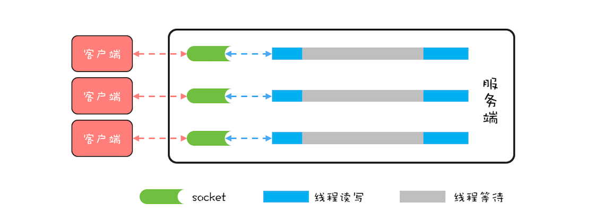
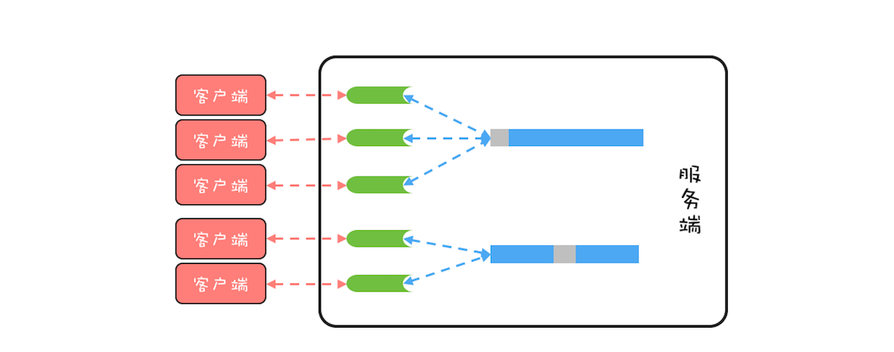
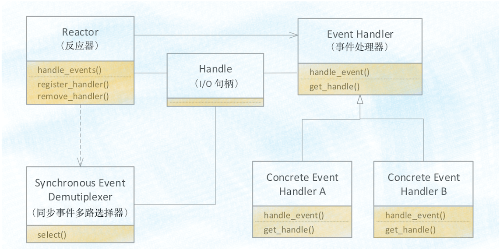
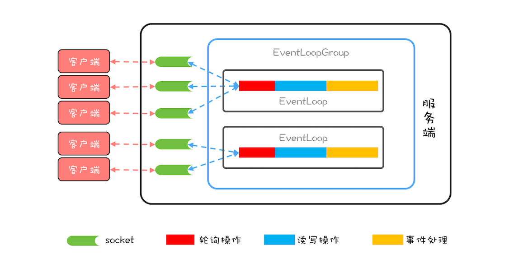

- 00 学习攻略 如何才能学好并发编程？.md.html
- 00 开篇词 你为什么需要学习并发编程？.md.html
- 01 可见性、原子性和有序性问题：并发编程Bug的源头.md.html
- 02 Java内存模型：看Java如何解决可见性和有序性问题.md.html
- 03 互斥锁（上）：解决原子性问题.md.html
- 04 互斥锁（下）：如何用一把锁保护多个资源？.md.html
- 05 一不小心就死锁了，怎么办？.md.html
- 06 用“等待-通知”机制优化循环等待.md.html
- 07 安全性、活跃性以及性能问题.md.html
- 08 管程：并发编程的万能钥匙.md.html
- 09 Java线程（上）：Java线程的生命周期.md.html
- 10 Java线程（中）：创建多少线程才是合适的？.md.html
- 11 Java线程（下）：为什么局部变量是线程安全的？.md.html
- 12 如何用面向对象思想写好并发程序？.md.html
- 13 理论基础模块热点问题答疑.md.html
- 14 Lock和Condition（上）：隐藏在并发包中的管程.md.html
- 15 Lock和Condition（下）：Dubbo如何用管程实现异步转同步？.md.html
- 16 Semaphore：如何快速实现一个限流器？.md.html
- 17 ReadWriteLock：如何快速实现一个完备的缓存？.md.html
- 18 StampedLock：有没有比读写锁更快的锁？.md.html
- 19 CountDownLatch和CyclicBarrier：如何让多线程步调一致？.md.html
- 20 并发容器：都有哪些“坑”需要我们填？.md.html
- 21 原子类：无锁工具类的典范.md.html
- 22 Executor与线程池：如何创建正确的线程池？.md.html
- 23 Future：如何用多线程实现最优的“烧水泡茶”程序？.md.html
- 24 CompletableFuture：异步编程没那么难.md.html
- 25 CompletionService：如何批量执行异步任务？.md.html
- 26 Fork_Join：单机版的MapReduce.md.html
- 27 并发工具类模块热点问题答疑.md.html
- 28 Immutability模式：如何利用不变性解决并发问题？.md.html
- 29 Copy-on-Write模式：不是延时策略的COW.md.html
- 3 个用户来信 打开一个新的并发世界.md.html
- 30 线程本地存储模式：没有共享，就没有伤害.md.html
- 31 Guarded Suspension模式：等待唤醒机制的规范实现.md.html
- 32 Balking模式：再谈线程安全的单例模式.md.html
- 33 Thread-Per-Message模式：最简单实用的分工方法.md.html
- 34 Worker Thread模式：如何避免重复创建线程？.md.html
- 35 两阶段终止模式：如何优雅地终止线程？.md.html
- 36 生产者-消费者模式：用流水线思想提高效率.md.html
- 37 设计模式模块热点问题答疑.md.html
- 38 案例分析（一）：高性能限流器Guava RateLimiter.md.html
- 39 案例分析（二）：高性能网络应用框架Netty.md.html
- 40 案例分析（三）：高性能队列Disruptor.md.html
- 41 案例分析（四）：高性能数据库连接池HiKariCP.md.html
- 42 Actor模型：面向对象原生的并发模型.md.html
- 43 软件事务内存：借鉴数据库的并发经验.md.html
- 44 协程：更轻量级的线程.md.html
- 45 CSP模型：Golang的主力队员.md.html
- 用户来信 真好，面试考到这些并发编程，我都答对了！.md.html
- 结束语 十年之后，初心依旧.md.html
- 捐赠
39 案例分析（二）：高性能网络应用框架Netty
Netty是一个高性能网络应用框架，应用非常普遍，目前在Java领域里，Netty基本上成为网络程序的标配了。Netty框架功能丰富，也非常复杂，今天我们主要分析Netty框架中的线程模型，而线程模型直接影响着网络程序的性能。
在介绍Netty的线程模型之前，我们首先需要把问题搞清楚，了解网络编程性能的瓶颈在哪里，然后再看Netty的线程模型是如何解决这个问题的。
网络编程性能的瓶颈
在《33 | Thread-Per-Message模式：最简单实用的分工方法》中，我们写过一个简单的网络程序echo，采用的是阻塞式I/O（BIO）。BIO模型里，所有read()操作和write()操作都会阻塞当前线程的，如果客户端已经和服务端建立了一个连接，而迟迟不发送数据，那么服务端的read()操作会一直阻塞，所以使用BIO模型，一般都会为每个socket分配一个独立的线程，这样就不会因为线程阻塞在一个socket上而影响对其他socket的读写。BIO的线程模型如下图所示，每一个socket都对应一个独立的线程；为了避免频繁创建、消耗线程，可以采用线程池，但是socket和线程之间的对应关系并不会变化。

BIO的线程模型
BIO这种线程模型适用于socket连接不是很多的场景；但是现在的互联网场景，往往需要服务器能够支撑十万甚至百万连接，而创建十万甚至上百万个线程显然并不现实，所以BIO线程模型无法解决百万连接的问题。如果仔细观察，你会发现互联网场景中，虽然连接多，但是每个连接上的请求并不频繁，所以线程大部分时间都在等待I/O就绪。也就是说线程大部分时间都阻塞在那里，这完全是浪费，如果我们能够解决这个问题，那就不需要这么多线程了。
顺着这个思路，我们可以将线程模型优化为下图这个样子，可以用一个线程来处理多个连接，这样线程的利用率就上来了，同时所需的线程数量也跟着降下来了。这个思路很好，可是使用BIO相关的API是无法实现的，这是为什么呢？因为BIO相关的socket读写操作都是阻塞式的，而一旦调用了阻塞式API，在I/O就绪前，调用线程会一直阻塞，也就无法处理其他的socket连接了。

理想的线程模型图
好在Java里还提供了非阻塞式（NIO）API，利用非阻塞式API就能够实现一个线程处理多个连接了。那具体如何实现呢？现在普遍都是采用Reactor模式，包括Netty的实现。所以，要想理解Netty的实现，接下来我们就需要先了解一下Reactor模式。
Reactor模式
下面是Reactor模式的类结构图，其中Handle指的是I/O句柄，在Java网络编程里，它本质上就是一个网络连接。Event Handler很容易理解，就是一个事件处理器，其中handle_event()方法处理I/O事件，也就是每个Event Handler处理一个I/O Handle；get_handle()方法可以返回这个I/O的Handle。Synchronous Event Demultiplexer可以理解为操作系统提供的I/O多路复用API，例如POSIX标准里的select()以及Linux里面的epoll()。

Reactor模式类结构图
Reactor模式的核心自然是Reactor这个类，其中register_handler()和remove_handler()这两个方法可以注册和删除一个事件处理器；handle_events()方式是核心，也是Reactor模式的发动机，这个方法的核心逻辑如下：首先通过同步事件多路选择器提供的select()方法监听网络事件，当有网络事件就绪后，就遍历事件处理器来处理该网络事件。由于网络事件是源源不断的，所以在主程序中启动Reactor模式，需要以 while(true){} 的方式调用handle_events()方法。
void Reactor::handle_events(){
//通过同步事件多路选择器提供的
//select()方法监听网络事件
select(handlers);
//处理网络事件
for(h in handlers){
h.handle_event();
}
}
// 在主程序中启动事件循环
while (true) {
handle_events();
Netty中的线程模型
Netty的实现虽然参考了Reactor模式，但是并没有完全照搬，Netty中最核心的概念是事件循环（EventLoop），其实也就是Reactor模式中的Reactor，负责监听网络事件并调用事件处理器进行处理。在4.x版本的Netty中，网络连接和EventLoop是稳定的多对1关系，而EventLoop和Java线程是1对1关系，这里的稳定指的是关系一旦确定就不再发生变化。也就是说一个网络连接只会对应唯一的一个EventLoop，而一个EventLoop也只会对应到一个Java线程，所以一个网络连接只会对应到一个Java线程。
一个网络连接对应到一个Java线程上，有什么好处呢？最大的好处就是对于一个网络连接的事件处理是单线程的，这样就避免了各种并发问题。
Netty中的线程模型可以参考下图，这个图和前面我们提到的理想的线程模型图非常相似，核心目标都是用一个线程处理多个网络连接。

Netty中的线程模型
Netty中还有一个核心概念是EventLoopGroup，顾名思义，一个EventLoopGroup由一组EventLoop组成。实际使用中，一般都会创建两个EventLoopGroup，一个称为bossGroup，一个称为workerGroup。为什么会有两个EventLoopGroup呢？
这个和socket处理网络请求的机制有关，socket处理TCP网络连接请求，是在一个独立的socket中，每当有一个TCP连接成功建立，都会创建一个新的socket，之后对TCP连接的读写都是由新创建处理的socket完成的。也就是说处理TCP连接请求和读写请求是通过两个不同的socket完成的。上面我们在讨论网络请求的时候，为了简化模型，只是讨论了读写请求，而没有讨论连接请求。
在Netty中，bossGroup就用来处理连接请求的，而workerGroup是用来处理读写请求的。bossGroup处理完连接请求后，会将这个连接提交给workerGroup来处理， workerGroup里面有多个EventLoop，那新的连接会交给哪个EventLoop来处理呢？这就需要一个负载均衡算法，Netty中目前使用的是轮询算法。
下面我们用Netty重新实现以下echo程序的服务端，近距离感受一下Netty。
用Netty实现Echo程序服务端
下面的示例代码基于Netty实现了echo程序服务端：首先创建了一个事件处理器（等同于Reactor模式中的事件处理器），然后创建了bossGroup和workerGroup，再之后创建并初始化了ServerBootstrap，代码还是很简单的，不过有两个地方需要注意一下。
第一个，如果NettybossGroup只监听一个端口，那bossGroup只需要1个EventLoop就可以了，多了纯属浪费。
第二个，默认情况下，Netty会创建“2*CPU核数”个EventLoop，由于网络连接与EventLoop有稳定的关系，所以事件处理器在处理网络事件的时候是不能有阻塞操作的，否则很容易导致请求大面积超时。如果实在无法避免使用阻塞操作，那可以通过线程池来异步处理。
//事件处理器
final EchoServerHandler serverHandler
= new EchoServerHandler();
//boss线程组
EventLoopGroup bossGroup
= new NioEventLoopGroup(1);
//worker线程组
EventLoopGroup workerGroup
= new NioEventLoopGroup();
try {
ServerBootstrap b = new ServerBootstrap();
b.group(bossGroup, workerGroup)
.channel(NioServerSocketChannel.class)
.childHandler(new ChannelInitializer<SocketChannel>() {
@Override
public void initChannel(SocketChannel ch){
ch.pipeline().addLast(serverHandler);
}
});
//bind服务端端口
ChannelFuture f = b.bind(9090).sync();
f.channel().closeFuture().sync();
} finally {
//终止工作线程组
workerGroup.shutdownGracefully();
//终止boss线程组
bossGroup.shutdownGracefully();
}
//socket连接处理器
class EchoServerHandler extends
ChannelInboundHandlerAdapter {
//处理读事件
@Override
public void channelRead(
ChannelHandlerContext ctx, Object msg){
ctx.write(msg);
}
//处理读完成事件
@Override
public void channelReadComplete(
ChannelHandlerContext ctx){
ctx.flush();
}
//处理异常事件
@Override
public void exceptionCaught(
ChannelHandlerContext ctx, Throwable cause) {
cause.printStackTrace();
ctx.close();
}
}
总结
Netty是一个款优秀的网络编程框架，性能非常好，为了实现高性能的目标，Netty做了很多优化，例如优化了ByteBuffer、支持零拷贝等等，和并发编程相关的就是它的线程模型了。Netty的线程模型设计得很精巧，每个网络连接都关联到了一个线程上，这样做的好处是：对于一个网络连接，读写操作都是单线程执行的，从而避免了并发程序的各种问题。
你要想深入理解Netty的线程模型，还需要对网络相关知识有一定的理解，关于Java IO的演进过程，你可以参考Scalable IO in Java，至于TCP/IP网络编程的知识你可以参考韩国尹圣雨写的经典教程——《TCP/IP网络编程》。
欢迎在留言区与我分享你的想法，也欢迎你在留言区记录你的思考过程。感谢阅读，如果你觉得这篇文章对你有帮助的话，也欢迎把它分享给更多的朋友。
© 2019 - 2023 Liangliang Lee. Powered by gin and hexo-theme-book.